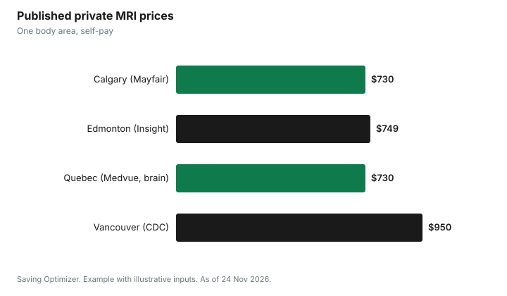

Healthcare · Canada
Private MRI and Diagnostic Clinics in Canada: Costs and Rules by Province

A private MRI costs about $730 to $950 for one body area at clinics in Alberta and BC that publish prices. Quebec has private clinics too. In Ontario, paying privately for a medically necessary MRI is generally not allowed. Before you pay, ask your doctor how long the public wait is likely to be; you're buying time, not a better scan.
Key takeaways
- Alberta and BC: $730 to $950 for one body area (published prices, Nov 2026).
- Quebec: Medvue lists a head or brain MRI at $730.
- Ontario: private payment for medically necessary MRI is generally barred.
- Contrast adds $175 to $250; most clinics need a referral.
- A prescribed MRI can be claimed as a medical expense.
Prices and rules by province
| Province | Self-pay option | Published price, one area |
|---|---|---|
| Alberta | Yes | $730 (Calgary) to $749-$799 (Edmonton) |
| British Columbia | Yes, referral needed | $950 (Vancouver) |
| Quebec | Yes, not covered by RAMQ | $730 head or brain (Medvue) |
| Ontario | Generally only third-party payers | No published self-pay price found |
Questions to ask
- How long is my public wait likely to be?
- Will a faster scan change my treatment?
- What's the full price with contrast and extra areas?
- Who reads the scan, and who acts on the report?
- Will my benefits plan or HSA pay for it?

Cost after benefits: an example
Example: a $730 private MRI paid from a health spending account costs you nothing out of pocket beyond your HSA balance. Without one, keep the receipt for the medical expense tax credit.
See the medical expense tax credit and health spending accounts.
Sources
- Wait or Fly, Private MRI in Canada: prices by province and clinic (3 Nov 2026), checked 24 Nov 2026.
- EFW Radiology (Calgary), Private MRI pricing, checked 24 Nov 2026.
- Medvue (Quebec), Price list from 6 January 2026, checked 24 Nov 2026.
- Canadian Institute for Health Information, Wait times for priority procedures, checked 24 Nov 2026.
- Canada Revenue Agency, Details of medical expenses, checked 24 Nov 2026.
Frequently asked questions
How much is a private MRI in Canada?
About $730 to $950 for one body area at clinics that publish prices.
Can I pay for a private MRI in Ontario?
Generally not for a medically necessary scan; third parties like car insurers and WSIB are exceptions.
Does provincial health insurance pay for a private MRI?
No. Some workplace plans and HSAs may.
Do I need a referral?
Usually. Most clinics ask for a doctor's requisition.
Can I claim a private MRI on my taxes?
A prescribed diagnostic scan can be an eligible medical expense.
Researched and drafted with AI assistance and fact-checked against official Canadian sources. How we create content.
Note: Not medical or legal advice. Education only.